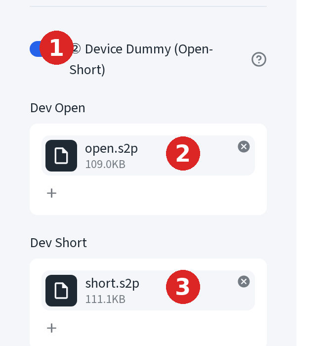
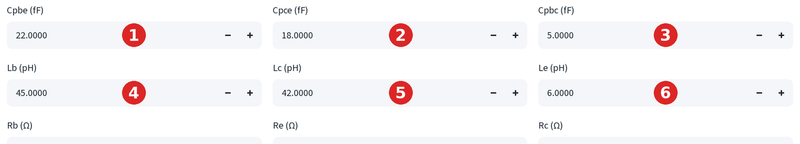
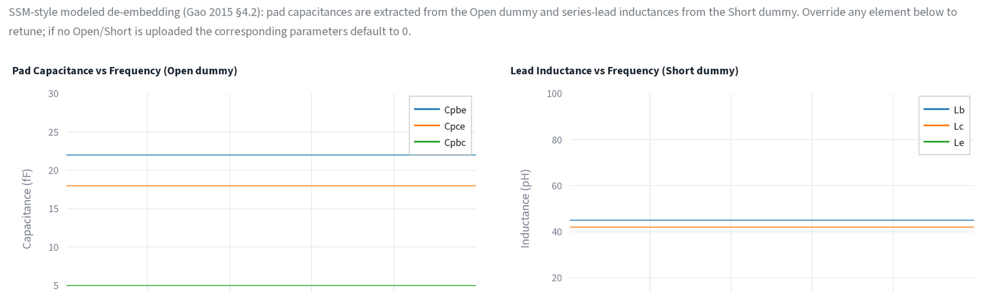
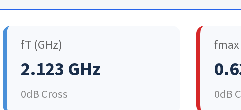
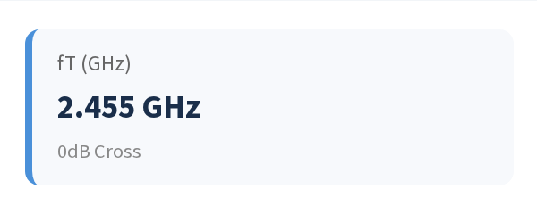
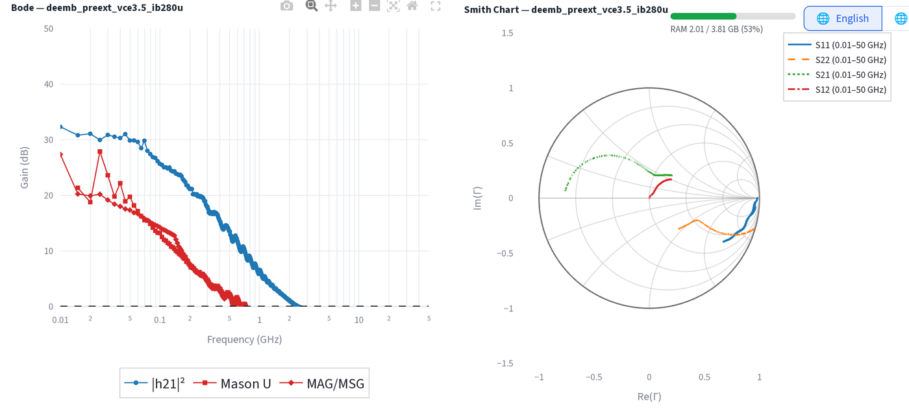

開路/短路去嵌入¶
以開路/短路標準剝離焊墊與導線寄生效應，與批次去嵌入分頁執行的萃取相同。
本頁以示範檔案完整走過一遍：open.s2p、short.s2p，以及一個 DUT
（vce3.5_ib280u.s2p）。
步驟 1：提供 Open 與 Short 標準¶
- 在側邊欄開啟② 元件 Dummy（Open-Short） (② Device Dummy (Open-Short))。
- 將 Open 檔案拖入元件 Open (Dev Open)。
- 將 Short 檔案拖入元件 Short (Dev Short)。

這兩個檔案會提供批次去嵌入分頁的校準資料。照常透過主要的上傳 DUT .s2p / .csv 檔案 (Upload DUT .s2p / .csv files) 區塊上傳 DUT 檔案，然後 開啟批次去嵌入 (Batch De-embed) 分頁。
各步驟移除的內容¶
- Open 移除並聯的焊墊電容：Cpbe（base、emitter）、Cpce（collector、 emitter）、Cpbc（base、collector）。
- Short 移除串聯的引線電感與電阻：Lb、Lc、Le（以及 Rpb/Rpc/Rpe）， 並先扣除焊墊導納。
批次去嵌入分頁會將兩者的結果顯示為可編輯的覆寫欄位，並以 Open/Short 的 計算結果作為初始值：

編輯任一欄位即可手動微調去嵌入結果；點選↺ 重設為預設值 (↺ Reset to defaults) 可還原為計算值。
預覽圖¶
覆寫欄位上方有兩張圖，讓你在信任校準結果之前先做健全性檢查：

兩者理想上都應是橫線，這是乾淨的寄生萃取的特徵。若曲線出現斜率或彎曲， 代表標準在該頻段內的行為不像純電容/電感（可能是寄生共振或探針接觸不良）， 覆寫欄位預設的固定值也就變得較不可信。
元件的前後對比¶
剝離寄生效應會改變 fT，因為焊墊電容與引線電感原本在負載本質元件。以示範 DUT 為例：
之前，原始資料，未去嵌入（單一檔案分頁，去嵌入：無 (De-embedding: None)）：

之後，去嵌入後（批次去嵌入分頁，逐檔結果）：

移除焊墊/引線寄生效應後，fT 從 2.123 GHz 升至 2.455 GHz：本質元件的速度 比探針層級的量測結果更快。去嵌入後的 Bode 與 Smith 圖，在同一份逐檔 結果中可以看到：

模型計算 vs 量測值來源¶
Open 與 Short 各自可以獨立選擇兩種去嵌入方式：
- 模型計算 (Modeled)：由覆寫值建立焊墊/引線網路並將其扣除，上方數字 使用的就是這種方式。
- 量測值 (Measured)：直接扣除原始的 Open/Short S 參數，中間不經過 模型。若對應的 dummy 檔案缺失，會自動退回模型計算。